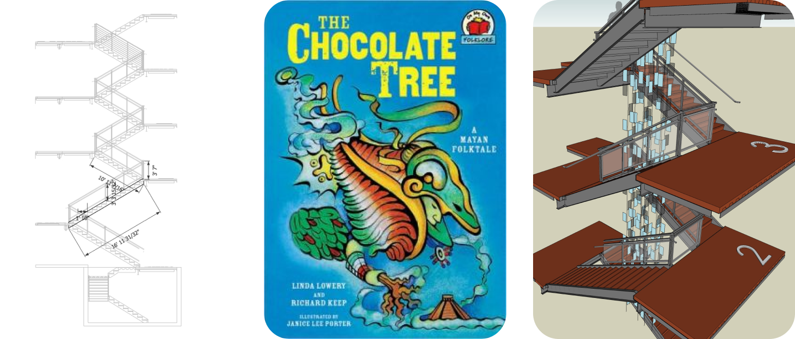
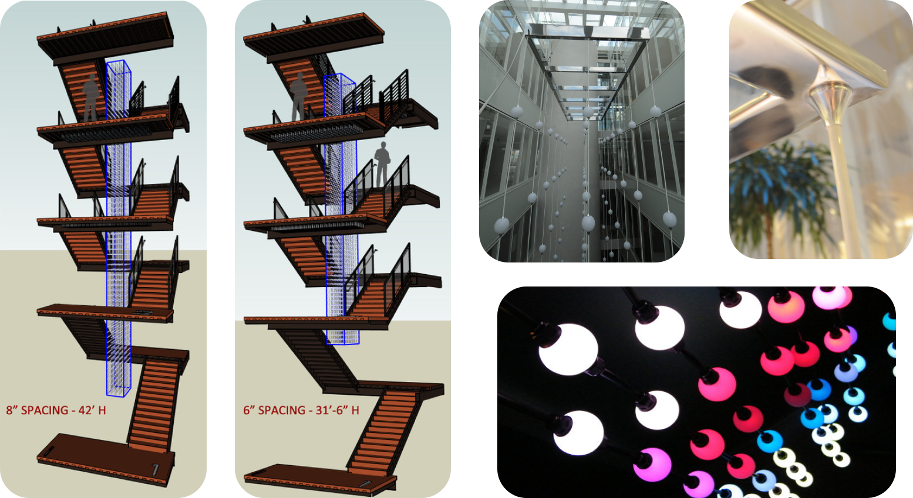
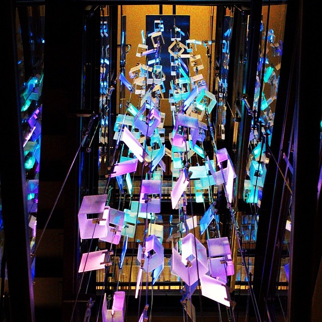

Gallery

120 lamps. One voice.



120 individually handbuilt lamps suspended across four stories of atrium — a living narrative of light, spatial audio, and quiet interactivity.
"Make taking the stairs so compelling that people's health improves from the extra exercise."
Mariposa is a permanent public artwork occupying the full height of a four-story staircase atrium in Denver. The commission had a deceptively simple goal: make the stairs so much more interesting than the elevator that building occupants would choose them voluntarily — improving public health through the sheer joy of discovery.
The installation is built around 120 custom lamps, each containing 13 individually addressable LEDs and 12 hand-cut acrylic light strands. Together they form a continuous narrative told in light — characters with moods, seasons, and behaviors that evolve through the day and across the year. Along the handrail, 12 interactive buttons tell different parts of "The Chocolate Tree," a Mayan folktale, triggering unique lighting sequences as visitors ascend. Multi-channel spatial audio is placed throughout the height of the stairwell, creating an immersive soundscape that moves with you. Running 24/7, 365 days a year, the system responds to user interactions while maintaining its ambient narrative life.
The brief demanded an artwork that could run without intervention — no maintenance calls, no operator, no resets. Every lamp had to be robust enough to withstand years of continuous operation while remaining individually expressive within the choreography.
The four-story vertical span introduced structural complexity: rigging loads, cable management across floors, and the challenge of creating an experience that read coherently whether you were looking up from the ground floor or down from the fourth. The spatial audio system had to feel like it came from the chandelier itself, not from speakers mounted on walls.
01 — Narrative & Character Design
Before any lamp was built, we developed the narrative — a cast of light characters with distinct personalities, moods, and relationships to one another. Each cluster of lamps was assigned a role within the larger story, so the choreography would feel authored rather than algorithmic.
02 — Fabrication at ADX
In collaboration with ADX Portland, all 120 lamps were fabricated using custom CNC milling for precision components, then hand-assembled and finished. Each unit contains 13 individually addressable LEDs and 12 acrylic light strands, hand-cut and heat-formed. The fabrication process took months — every lamp is one-of-a-kind while fitting within the overall formal language of the piece.
03 — Interactive Handrail
Along the handrail, 12 interactive buttons were embedded, each triggering a unique lighting sequence that tells a different part of "The Chocolate Tree," a Mayan folktale. As visitors press buttons while ascending the stairs, the chandelier responds with choreographed light patterns that bring the narrative to life across all four stories.
04 — Unity Choreography
The lighting choreography was built in Unity as a time-layered system with daily, seasonal, and event-driven behaviors. The handrail buttons trigger narrative sequences that temporarily shift the entire chandelier's state before gradually returning to its ambient narrative — a moment of acknowledgment every time someone interacts with the story.
05 — Spatial Audio & Opening
A custom programmed multi-channel audio system was spatially placed throughout the height of the stairwell, tuned on-site over several days before opening. The goal was for the sound to feel like it emanated from the lamps themselves — close-field, intimate, never obviously from a speaker. Running 24/7, 365 days a year, the system creates an ever-present ambient environment that responds to user interactions.


Mariposa has been in continuous operation since its 2015 installation, running 24/7, 365 days a year without interruption. Building occupants report choosing the stairs over the elevator simply because they want to see what the chandelier is doing today — different colors at different hours, interactive story moments triggered by the handrail buttons, moments of stillness that weren't there last week. That sense of discovery, spread over years of familiarity, is the work functioning exactly as intended.
The elevator interactivity remains one of the most noted details — small enough that first-time visitors miss it, meaningful enough that daily users look forward to it.
"The thing I keep noticing is how different it looks on a rainy afternoon versus a clear morning. It's like it knows."
Every one unique, every one identical in behavior interface
Plus 12 hand-cut acrylic light strands
No unscheduled service calls in 3+ years
// Next Project
Permanent public installations are some of the most demanding and most rewarding work we do. Let's talk about what your space needs.
Start the Conversation